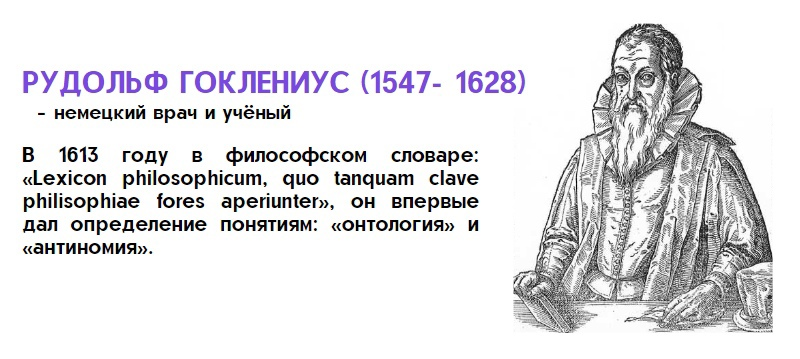
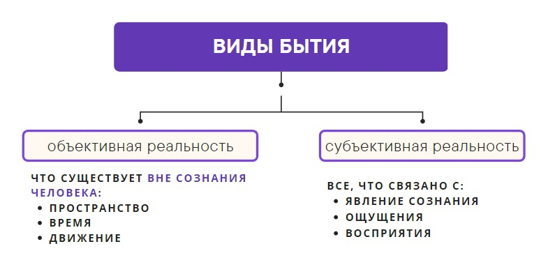
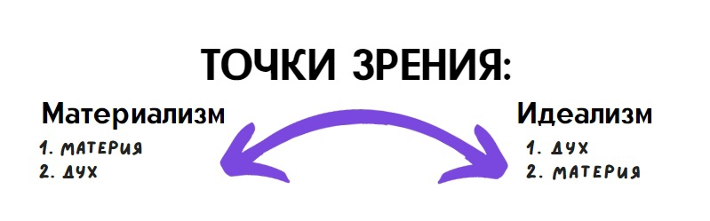
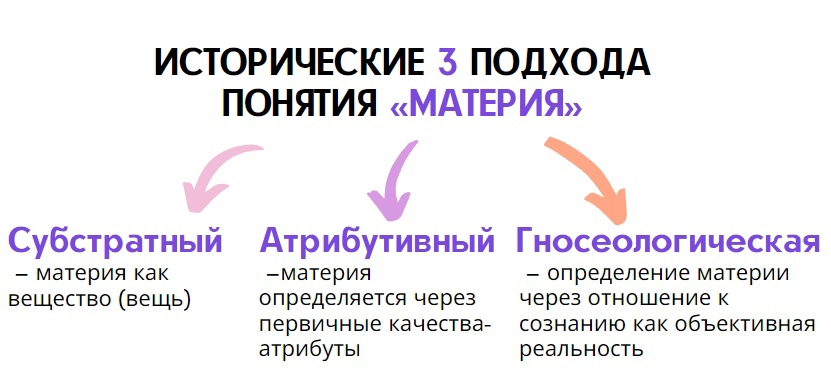
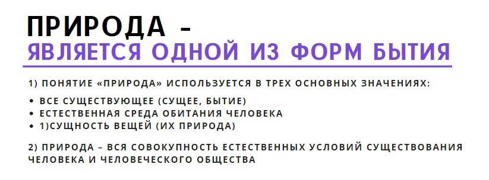
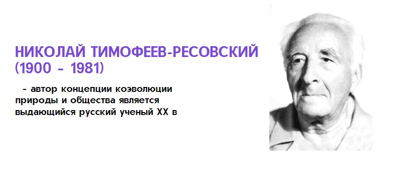

11. Онтология как философское учение о бытии. Формы бытия и их взаимосвязь. Диалектика как философская теория развития
Онтология (с греч «ontos» – сущее + «logos» – слово, учение, смысл ) – учение о бытии, изучает фундаментальные основы бытия (существование, реальность, действительность). Термин появился в 1613г.( Р. Гоклениус)
- Античная (поиск первоосновы реальности): Милетцы (Милетская школа)-существует только бытие первостихий (вода, огонь, воздух), Элеаты (элейская школа) – единство и неподвижность бытия, которому невозможно делиться на части и некуда двигаться (апории элеатов – «Стрела», Ахилл и черапаха» и др.), Атомисты – существует бытие (атомы) и небытие (пустота), Платонизм (школа Платона) – подлинное бытие (мир идей) и неподлинное (мир вещей, как копии идей).
- Средневековая: теоцентризм: есть абсолютное бытие (Бог) и его сотворение (мир, природа, человек).
- Новое время: «Мыслю - значит существую» (Декарт); «Существовать, значит быть воспринимаемым» (Беркли); «В начале чистое бытие, т.е. абсолютная идея, а затем в процессе развития рождается наличное бытие, качественно определённое, мир вещей, других идей» (Гегель). На Востоке: Дао – первопричина мира, путь, которому следуют все вещи в мире.
Чтобы понять насколько тема онтологии важна не только для философии, но и для современной науки можно вспомнить исследования связанные с теорией т.н. Большого взрыва, пытающиеся установить причины и закономерности появления Вселенной и ее составляющих – материи, пространства, времени и т.д.
Что еще можно сказать по вопросу бытия кроме истории развития этого понятия? Виды бытия выделяют: объективная реальность (мир как он есть), субъективная реальность (как мы его видим и понимаем). Возникает вопрос – а есть ли на самом деле мир, как это доказать, а если есть то какой он, как нам это понять, возможно ли нам вообще его понять вне самих себя??? Это важнейшие онтологические вопросы.
Уровни бытия: актуальное (существующие) и потенциальное (возможное) бытие. Фишка в том, что актуальное бытие всегда в себе содержит возможное бытие, а значит то, что есть, всегда внутренне содержит в себе то, чего еще даже нет. Станет ли потенциальное бытие актуальным, например, родится ли у вас ребенок, зависит от множества субъективных и объективных факторов, просчитать которые заранее фактически невозможно. Но бесспорно лишь то, что было отмечено, реальное бытие уже содержит в себе и то, что пока еще небытие (как одна мысль, например, рождает другую, но какую именно – знать заранее тоже практически невозможно). Это еще один важнейший вопрос онтологии – бытие причинно-следственно задано всем предыдущим случившимся (событиями, процессами, явлениями) или оно свободно развивается, спонтанно, в нем есть постоянные отклонения, броуновское движение? И чего больше, порядка или хаоса??? От кого или от чего зависит, какая следующая мысль родится в моей голове? J Ведь я вроде их определяю, а вроде и нет, но как такое может быть?? А вот так есть.)) Что еще по поводу бытия, выделяют формы бытия: природное (бытие окружающего мира, природы), психическое (духовное, бытие сознания каждого конкретного человека), социальное (общественное, бытие массового сознания, ценностей, норм культуры, поведения, общественное мнение), компьютерное (виртуальная реальность, интернет, социальные медиа, кинематограф, СМИ + телевидение, которые создают целые новые миры на экране телевизора – т.н. «зомбоящика», кстати, почему, на ваш взгляд, телевизор получил такое странное прозвище?).
Решение проблем онтологии связано с двумя точками зрения: Материализм – первичной реальностью является материя, а дух вторичен, он возникает из материи. Идеализм – наоборот.
Мир (согласно материализму) – это непрерывно развивающаяся реальность, связанная прежде всего с вещами, материей.
Во время древнегреческого этапа развития материализма он был наивным: реальность объясняли через ту или иную первооснову, атомы и т. д.
Идеализм – первоосновой всего является дух, который порождает материю – весь природный мир. Виды идеализма: Объективный (дух, первооснова (первоначало) существует объективно, независимо от человека ( Платон, Гегель). Субъективный (принимает в качестве первоначала сознание субъекта (например, одного человека), тогда мир понимается как представление человека о мире (Беркли, Юм, Кант).
Соотношение материализма и идеализма – один из ключевых вопросов, как онтологии, так и всей философии. Скорее всего они неразрывно связаны и одно не существует без другого. Но философы всегда хотели узнать, что главнее, что возникает раньше – материя или сознание, «яйцо или курица»? Вопрос кажется никчемным, но если с материальным началом мира вроде бы многое понятно (тут многое сделано в области физики), то с идеальным не совсем ясно и если понимать под идеальным, например, информацию о мире, о его явлениях, процессах и вещах + знания о свойствах, характеристиках и закономерностях - а все это имеет как бы нематериальную природу (например, вода сейчас жидкая, но ее скрытым свойством является возможность стать льдом или паром, при этом сейчас она м.б. только жидкой и никакой другой, поскольку в таком виде существует сейчас материя, но для нас все иные ее свойства существуют в виде информации, несмотря на то, что они еще не проявлены, получается что в идеальном виде (в виде идеи) вода существует сразу во всех своих агрегатных состояних). Возникает вопрос - так что же тогда реально, то, что мы видим воду или то, что мы знаем о ней??? В этом примере краткая суть вечного спора между материализмом и идеализмом.
12. Понятие материи в философии и науке. Пространство, время и движение как атрибуты материального бытия
Начало ответа на этот вопрос см. в предыдущем вопросе об онтологии в части рассмотрения особенностей материализма, как важнейшей мировоззренческой позиции в философии.
- Субстратный (самый древний) - материя как вещество (вещь).
- Атрибутивный (с XIIIв.)- материя определяется через первичные качества-атрибуты (масса, количество частей, свойства) –Декарт выделял наличие 2-ух субстанций на основе человека: тело и душу, так и у вещи есть материальное (атрибут-размер) и духовное (атрибут-мышление) составляющие.
- Гносеологическая – определение материи через отношение к сознанию как объективная реальность (мышление – субъективная реальность)
Основанием единства и многообразия материи является ее субстанциональность (неуничтожимость).
Пространство есть форма бытия, характеризующая порядок сосуществования и рядоположенность материальных образований, их структурность и протяжённость.
Время – форма бытия материи, характеризующая смену состояний объектов, последовательность процессов и их длительность.
- Субстанциальная концепция рассматривает пространство и время как особые самостоятельные сущности. Пространство предстает в ней как абсолютная пустота, вместилище вещей и явлений (Демокрит и Ньютон), а время - как бесконечный поток состояний и событий.
- Реляционная концепция понимает пространство и время как систему отношений, которые не обладают самостоятельным существованием, а выступают как особые характеристики вещей, их атрибуты (Аристотель, Лейбниц, Эйнштейн).
- Биологический подход - биологическое время связано с биоритмами живых организмов, сменой дня и ночи, временем года и циклами солнечной активности. Считается также, что существует множество биологических пространств (например, ареалы распространения тех или иных организмов или их популяций).
- Психологический подход - психологическое время связано с психическими состояниями субъекта и его восприятием времени, установками мышления и т.п. Время в той или иной ситуации может «замедляться» или, наоборот, «ускоряться», оно «летит» или «тянется». Это субъективное чувство времени.
- Социальный подход - социальное время связано с развитием человечества и его историей, также может ускоряться и замедляться. Ускорение времени характерно для ХХ века в связи с научно-технической прогрессом (НТП). НТП спрессовал социальное пространство и ускорил бег времени, придав взрывной характер развитию общественно-экономических процессов. Планета стала маленькой и тесной (глобализация) для человечества как единого целого, а время перемещения из одного ее конца в другой теперь измеряется часами, что было просто немыслимо еще в прошлом столетии. Появился соответствующий техногенный термин «онлайн», подчеркивающий физическую разделенность, но, вместе с тем, виртуальное единство «здесь и сейчас».
13. Философия природы. Идея коэволюции общества и природы. Роль синергетики в постижении бытия
- все существующее (сущее, бытие);
- естественная среда обитания человека;
- сущность вещей (их природа).
В онтологии имеет значение выявление предельных оснований природы прежде всего в первом и во втором значении этого слова.
Природа (значение №2) – вся совокупность естественных условий существования человека и человеческого общества. Живая природа – базис, без кот. не было бы ни человечества, произошедшего от животных предков, ни цивилизованной формы сосуществования людей – общества, кот. пришло на смену первобытному стаду этих животных предков. Природа устанавливает, таким образом, базовые закономерности процессов обмена веществом и энергией м/у человеком, обществом и собственно собой (получение пищи, использование полезных ископаемых, удовлетворение иных потребностей жизнедеятельности). Однако противоречивость отношений в системе общество-природа просматривается уже в том, что, с одной стороны, по мере развития общества оно во все в большей степени овладевает силами природы и ее богатствами (покоряет и подавляет природу). Все это реализуется в развитии производственных сил и мощностей. С другой стороны, чем больше человек подчиняет себе природу, берет от нее, тем больше он от нее зависит. Из этой противоречивой зависимости (первый парадокс) на горизонте (да уже и в реальности) появляются предсказания о грядущих экологических проблемах.
Пути к решению экологических проблем призвана находить наука, которая (второй парадокс) сама же их по сути и породила. Понятие «экология» тесно связано с понятием «природа» – (от др.-греч. οἶκος – обиталище, жилище, дом, имущество и λόγος – понятие, учение, наука) – наука о взаимодействиях живых организмов между собой и с их средой обитания. Она получило распространение во многом в связи с необходимостью осмысления глобальных экологических проблем. Один из вариантов решения экологических проблем сводится к тому, что избежать эти проблемы путем сокращения численности людей, свертывания (ограничения) материальных ПС (производительных сил – заводов, фабрик, станций, наносящих наибольший ущерб природе) или даже отказа от современных орудий труда и технологий, если они ведут к высоким рискам экологического кризиса. Эта концепция получила название «Нулевой рост экономики».
Однако даже если реализовать ограничения производства, необходим коренной поворот (возвращение) самого человека к природе с точки зрения сознательного, а не потребительского отношения. Именно поэтому среди наиболее мощных и влиятельных партий в современной Европе такое распространение получили партии т.н. «зеленых», а деятельность по защите окр. среды и повышению экол. стандартов в разных сферах общества (энергетика, автомобилестроение, утилизация отходов, защита прав животных и т.д.), а концепция «зеленой экономики» стала крайне популярной, как и деятельность многих активистов (Грета Тунберг). Таким образом, следует вести речь о том, что в современном мире, делая ставку на развитие технологий для решения экологических проблем (лидируют в этом плане в первую очередь три направления: биотехнологии, нанотехнологии и инфотехнологии) их перечень следует дополнить четвертым видом – социально-гуманитарными технологиями (технологии воспитания у человека безопасного экологического поведения, привычек, ценностей, общественного сознания и даже моды безопасного потребления). С другой стороны, целью является создание таких технологических способов производства (дело в том, что человек изначально эволюционировал благодаря труду и своим постоянно развивающимся трудовым навыкам и поэтому он не может просто так отказаться от труда и собственно производства), которые как бы сливались бы с природой (это и есть идея коэволюции, т.е. совместного взаимообусловленного сосуществования и развитие природы и общества). Другими словами должен произойти переход человечества из биосферы в ноосферу, т. е . в сферу разума (идея академика В.И. Вернадского (1863 – 1945). По его мнению, именно такой переход позволит человеку выполнить свою основную миссию – действительно эволюционировать (пока еще человек относительно эволюционировал, т.к. не живет в устойчивом развитии как вид, потребляет от природы намного больше, чем отдает, поэтому современное развитие и нельзя однозначно классифицировать как прогресс или регресс, т.е. мы сами пока не знаем, чего мы именно добились), сохранив при этом природу на Земле как уникальную колыбель жизни в нашей части Вселенной. Иными словами, когда человек научится сосуществовать гармонично с природой, только тогда можно будет заявить об успехе эволюции человека как вида. В противном случае, если он сам себя уничтожит, то ни о каком разумном развитии или совершенствовании, эволюции не может идти и речи. Т.е. нужна именно коэволюция – неразрушающее совместное развитие природы и человека.
Автором концепции коэволюции природы и общества является выдающийся русский ученый XX в. Н. Тимофеев-Ресовский (1900 – 1981).
Для вдохновения и размышлений на эту тему можно также подумать над парадоксом, зачем природа создала человека, если он ее разрушает, задуман ли был ею такой сценарий, ведь если человек часть плана эволюционной самореализации (саморазвертки) биосферы, то она, таким образом, способствовала появлению в лице человека главного фактора своей дистабилизации. И тогда не понятно, зачем биосфере нужен был человек разумный, ведь именно его разум ведет к нещадной эксплуатации природы, если бы природа оставила человека обычным животным, то он не мог бы причинять ей столько вреда и тогда развитие было бы полностью устойчивым. Однако природа как будто целенаправленно (если только не верить мнению, что жизнь зародилась и развивалась случайно) способствовала появлению и эволюции именно разумного человека. Подобная идея в науке получила название «антропный принцип». Из подобных рассуждений также развивается уже упомянутая выше точка зрения Вернадского о неизбежности перехода биосферы в ноосферу, т.к. принцип разумности заложен изначально еще в самой природе, а уже потом в человеке, т.е. природа просто так по ошибке не могла создать то, что ее погубит… или все же могла? Могла ли природа ошибиться в своем плане? И вообще можем ли мы приписывать природе свойство разумности? Если мы ответим на этот вопрос «да», то возможно стоит согласиться с Гегелем, который еще в Новое время утверждал, что мир является реализацией Абсолютного духа (см. вопр. 5), читай – мир есть реализация абсолютного замысла, поэтому в мире «Все действительное разумно, все разумное действительно» (цитата Гегеля). Звучит странно, но после рассуждений о разумности или неразумности природы становится понятно, что именно Гегель, мог иметь в виду. Хотя в то время он вряд ли мог слышать об идее коэволюции и нарастающем на сегодняшний день экологическом кризисе.
На этот вопрос, зачем природа создала человека, также частично отвечает теория глобального эволюционизма.
Глобальный эволюционизм – это концепция, целью которой является построение универсальной модели эволюции, связывающей воедино развитие космоса, земли, появления жизни на земле и человека. Эволюция (от лат. evolutio – развертывание) – процесс качественной трансформации (или деградации), структурного изменения чего-либо от одного состояния к другому. Концепция глобального эволюционизма оформилась в 80-е гг. XX в. на основе объединения данных различных наук, прежде всего естественных. Такое объединение затем получило название междисциплинарного синтеза.
Дело в том, в ХХ в., когда произошел выход человека в космос, стало намного больше, чем ранее, очевидно, что жизнь на Земле является лишь частью еще более масштабных процессов – космических. Поэтому возникла необходимость осмысления эволюции на еще более высоком и сложном уровне.
Концепция глобального эволюционизма включает в себя описание четырех взаимодополняющих типов эволюции: эволюцию космическую, химическую, биологическую и социальную, т.е. претендует на создание нового типа целостного знания об окружающей реальности. Обоснованию идей глобального эволюционизма способствовали три важнейших современных научных подхода: теория нестационарной Вселенной (Вселенная не есть проявление вечности, как полагалось долгое время в истории, она постоянно изменяется, в прошлом она была не такой как сейчас, а в будущем также будет другой), концепция биосферы и ноосферы (биосфера под воздействием активной деятельности человека будет трансформироваться в ноосферу – сферу синтеза природы и человеческого разума, их гармоничного сочетания) и идеи синергетики (неравновесность, открытость и нелинейность развития больших сложных систем, в качестве которой можно рассматривать и Вселенную, развитие которой постоянно связано с переходом от состояния хаоса к состоянию порядка и наоборот).
Поэтому в рамках концепции глобального эволюционизма представлен и т.н. «антропный принцип» – научно-ориентированная идея, обосновывающая не случайный, а целенаправленный с точки зрения эволюции Вселенной характер появления в ней феномена человека. Таким образом, делается попытка ответа на один из важнейших и сложных вопросом для человечества – как и почему человек появился. Ответ на него – потому что эволюция Вселенной предполагала целенаправленное появление разумной жизни на планете Земля.